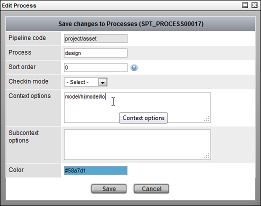
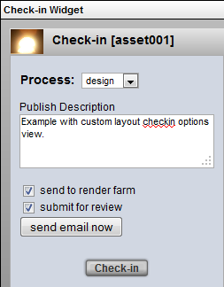

General Check-in Widget
General Check-in Widget
Description
This is the new preferred Check-in Widget for 3.7+. It makes use of the Java Applet to accomplish various kinds of check-in functions like checking in a single file, sequences of files, or directories. The copy or preallocate transfer mode should be used when dealing with a large file transfer. Upload transfer mode only supports checking in single files and sequences of files. Upload is set to be the default in case new users do not have the handoff directory readily set up.
Info
Name |
General Check-in Widget |
Class |
tactic.ui.widget.CheckinWdg |
Category |
Widget |
Supported Interfaces |
TableLayoutWdg |
TACTIC Version Support |
3.7.0 |
Required database columns |
none |
Options
transfer_mode |
upload, copy and move are supported. copy is recommended for most situations when users are usually granted only read access to the TACTIC asset repo. (default is copy) |
mode |
sequence, file, dir, and add are supported. sequence is for file sequence checkin; file is for single file checkin; dir is for directory checkin; and add is for appending file or dir to an existing snapshot. If not specified, multiple selections will be available for the user to choose. Note: upload transfer mode only supports single file or file sequence checkin. |
checkin_script_path |
a custom checkin script path to specify an override on what functions get called during a checkin. Note: If trying to do some preprocessing with the file or directory before checking in, just make use of validate_script_path function using Client Trigger. Client Trigger works by setting up this check-in script as a Client Trigger callback that affects the search type rather than just a column definition. |
validate_script_path |
a script path pointing to a JavaScript file that is run before the actual checkin. If it throws an error using "throw(<error message>)", the checkin will not initiate. This path can also use it to run some client-side preprocessing of the file or directory. It is not set up as a display option but rather as a Client Trigger callback. |
checkout_script_path |
a custom check-out script path to specify to override what happens during a check-out. |
process |
If set, the process specified will be pre-selected when the General Check-in Widget is drawn, |
lock_process |
If set to true, the user will not be able to choose a different process during a checkin, in the General Check-in Widget |
show_context |
When set to true, the context will be displayed to the user. (default is false) |
Gear Menu Options
The Gear Menu in the Check-in Widget provides the following administration options:

Edit Process |
Load the process options pop-up. The process and subcontext options are described further in the sections below |
List Processes |
List all of the processes for the current pipeline. This provides the same access to the as the Edit Process option but for all processes. |
Show Server Transaction Log |
Show the standard server transaction log |
Undo Last Server Transaction |
Undo the last transaction. When undoing a checkin, the files will also be removed in the file system. |
Redo Last Server Transaction |
Redo the last transaction. When redoing a checkin, the files will be restored in the file system. |
Implementation
The default settings will allow a user to check in files to an assets in the "publish" process. It provides a very general and loosely enforced workflow to check in and manage files. Often, it is required, that a particular process has very strict enforcement of naming conventions and check-in procedures.
The General Check-in widget is highly configured and can be tuned precisely for each part of the process. The various customizations can fall into the following categories:
Validation, Subcontext options, Custom interface, Custom check-in script, Naming conventions
Each of these can be customized for the particular widget or at the process level.
Validation
Validation is a custom script that will is run before the check-in process occurs. It provides the ability to check that all files in the checkin conform to some custom logic required for a successful checkin. If the validation script fails, then the entire checkin is aborted.
Client Side Triggers
A client trigger set up allows control over what check-in script or validate_checkin script to call during a checkin. Here is an example of how to set the checkin/validate_folder script to run before the check in of prod/asset. The event name is CheckinWdg|validate_script_path|<search_type>. If only a particular process is desired to be run on check in for, like "texture", the event name would become CheckinWdg|validate_script_path|prod/asset|texture. To override the checkin_script_path, use the event CheckinWdg|checkin_script_path|<search_type>. If this event-based set-up seems a bit too involving, override the checkin_script_path for just this instance of the widget by using the standard display option <checkin_script_path>.
Process Options
By default, the subcontext selection is set to (auto). It is the simplest to use and allows TACTIC to auto generate the subcontext. Because the subcontext is auto generated, strict naming conventions for the file are often sacrificed for ease of use. By default, the checked in file will just have a version number attached to it.
It is possible to force a limited list of subcontext options on a particular checkin. This means that the files checked in will be named according to the subcontext selected and provides a limited set of approved containers in which files can be checked in.
Process/Context/Subcontext
Checkin’s are always categorized by process. If there is no pipeline defined, the default process "publish" will be used. Categorizing checkin’s by the process in the pipeline of an asset organizes the work done for an asset according to its product life cycle.
Another important attribute of a checkin is the context. Assets are versioned according to their context which provide a namespace for versioning checkin’s of an asset. All checkin’s of an asset with the same context are versioned together. The context of an asset is a particular way to view an asset.
For example, a 2D drawing of a character and a 3D model of the same character represent the same abstract asset, so are two different contents of the asset. This can be implemented in TACTIC by specifying the following in the Check-in Widget’s Context Options:
Context Options: 2D_drawing|3D_model

Although the context can be any string, most often, it is built up from other parameters. The convention usually used is "<process>/<subcontext>". All of TACTIC’s built-in check-in tools assume this relationship. The subcontext provides a namespace for checking in multiple subcategories of files within a single context.
The following is an example of these subcontext options:
Subcontext Options: hi|med|low

Naming conventions are often strictly enforced, meaning that the folder and the file name are automatically supplied on check in of a file to the central repository.
Default Check-in Widget Options
In the panel on the right, when something from the list is selected for check in, the corresponding Check-in type (e.g.. file, directory, sequence, multiple individual files) is automatically selected by the Check-in Widget.
For example, on the panel on the right, if a file is selected for check in, the Check-in type will automatically switch to A File under the Check-in Options on the bottom left:
For example, if a folder is selected to check in on the right panel, the Check-in type will automatically switch to A Directory under the Check-in Options on the bottom left:
More Context and Subcontext Examples
Example 1)
To check in high resolution and low resolution files for a model process, first specify the context_options under:
Checkin Widget → Gear Menu → Edit Process:

Specify the following Context Options:
Context Options: model/hi|model/loOR specify the following Subcontext Options:
Subcontext Options: hi|loBoth of the choices above give the same result.
Result:
process = model
context = model/hi (or model/lo)Only use either the context field or the subcontext field but not both fields.
Note
If values are specified for both the context_options and the subcontext_options, only the context_options will be used (the subcontext_options will be ignored).
Example 2)
To provide the same options (hi and lo) and avoid using subcontexts specify the following context_options:
context_options: model_hi|model_loResult:
process = model
context = model_hi (or model_lo)Notice that the forward slash / was not used, which avoids using subcontexts.
Example 3)
The following is another example of how to avoiding using subcontexts altogether.
To check in a proxy and a staging context for a model process, specify the following context_options:
context_options: model_proxy|model_stagingResult:
process = model
context = model_proxy (or model_staging)Again, notice that the forward slash / was not used, which avoids using subcontexts.
Subcontext Keywords: (auto), (main) and (text)
The following subcontext option keywords are supported:
(auto) |
Uses the filename as the subcontext (auto is the default if no values are specified for the context or subcontext options) |
(main) |
Uses the process as the context |
(text) |
Allows the user to specify their own context for the file to check in |
Example for (auto):
process: |
design |
filename: |
my_checkin_file.txt |
subcontext option selected: |
(auto) |
Result:
context = design/my_checkin_file.txtExample for (main):
process: |
design |
subcontext option selected: |
(main) |
Result:
context = design (because is the process)Example for*(text)*:
To check in different colors of a car for the design process eg. a green version of the car and a red version
process: |
design |
subcontext option selected: |
(text) |
custom context inputted |
green |
Result:
context = design/blue

Providing a Custom Layout View For the Check-in Options
A custom layout view can be provided in the check-in panel as options.
For example, to provide check boxes during the check in to submit the job to the render farm or to submit the file for the review process, create a custom view and specify the view in the Check Options View.
To do this, first, create a custom view under:
Admin Views → Project → Widget Config
Below is an example of a custom layout view:

note:
In the example custom view above, to make use of these custom UI check boxes, more work needs to be done to override the checkin_script or checkin_validate_script.
The checkin_script and the checkin_validate script can be found under: Checkin Widget → Gear Menu → List Processes
Example validate scripts can be found at the end of this Check-in Widget doc in the section labeled Example Scripts: Example 1 and 2.
Then, specify the name of the view under:
Checkin Widget → Gear Menu → List Processes

In the Check-in Options View, specify the name of the custom layout view for the check-in options:

Finally, select a file to check in, the custom view with the check-in options will appear on the panel on the left.
Without custom check-in options: |
With customer check-in options: |
|
 |

Script Samples
This script can be saved in the Script Editor accessible through the Gear Menu.
Example 1: checkin/validate_folder
var values = bvr.values;
var file_path = values.file_paths[0];
var sk = values.search_key;
var applet = spt.Applet.get();
var file_list = applet.list_dir(file_path);
for (var i=0; i <file_list.length; i++){
var base =spt.path.get_basename(file_list[i]);
if ( base == 'DATA') {
throw('it contains a DATA folder. Checkin aborted');
}
}Example 2: checkin/validate_file
var values = bvr.values;
var file_path = values.file_paths[0];
var sk = values.search_key;
var applet = spt.Applet.get();
var base =spt.path.get_basename(file_path);
if ( base.test(/\\.mov$/)) {
throw('it does not have a mov extension. Validation failed.');
}Example 3: Custom checkin_script using display option "checkin_script_path". Also retrieving and showing the values of checkboxes. The default snapshot_type is file, if the file extension is .mov, the snapshot_type is set to mov.
var file_paths = bvr.values.file_paths;
var description = bvr.values.description;
var search_key = bvr.values.search_key;
var context = bvr.values.context;
var transfer_mode = bvr.values.transfer_mode
var is_current = bvr.values.is_current;
var path = file_paths[0]
spt.app_busy.show("File Checkin", path);
var values_dic = bvr.custom_options;
console.log(value_dic);
var snapshot_type = 'file';
if (path.test(/\\.mov$/)){
snapshot_type = 'mov';
}
var server = TacticServerStub.get();
snapshot = server.simple_checkin(search_key, context, path,
{description: description, mode: transfer_mode, is_current: is_current,
snapshot_type:'mov'});Advanced
The General Check-in Widget is usually invoked with a CheckinButtonElementWdg with a transfer mode specified. In this implementation, the process will be preselected as "texture", providing the pipeline for this sObject does contain a process named texture.
<element name='general_checkin' title=' '>
<display class='tactic.ui.widget.CheckinButtonElementWdg'>
<transfer_mode>copy</transfer_mode>
<process>texture</process>
</display>
</element>In this implementation, the process will be preselected as "model", providing the pipeline for this sObject does contain a process named model. The user cannot switch to other processes in the pipeline, and only "New Directory" mode can be selected.
<element name='general_checkin' title=' '>
<display class='tactic.ui.widget.CheckinButtonElementWdg'>
<transfer_mode>copy</transfer_mode>
<process>model</process>
<lock_process>true</lock_process>
<mode>dir</mode>
</display>
</element>